CS180 Project 2
Fun with Filters and Frequencies!
My attempt at finding edges, making images sharper, and putting some strange combinations together.
Overview
Fun with Filters and Frequencies!
My attempt at using filters to find edges, sharpen images, and put images together in ways that look a little strange :D
The general idea is simple: different filters keep different parts of an image. I start with convolution and finite differences, then use low and high frequencies to make hybrid images and smoother blends.
Click any figure to open the full-size image. The comparisons include the input images as well as the outputs.
Part 1.1
Convolutions from Scratch
I implemented convolution in two ways. The first uses four loops: two to move across the image and two to move across the filter. The second still loops over each output pixel, but uses NumPy to multiply and sum the entire patch at once.
Both functions flip the filter horizontally and vertically before applying it. I use zero-filled same padding so the output has the same height and width as the input. For an even-sized filter, the extra padding goes on the top and left. Pixels near the boundary see zeros outside the image, which can darken the border or create artificial edges.
NumPy implementations: four loops and two loops
# 1.1
def conv_4_loop(image, kernel):
image = np.asarray(image, dtype=np.float64)
kernel = np.asarray(kernel, dtype=np.float64)
height, width = image.shape
k_height, k_width = kernel.shape
pad_top = k_height // 2
pad_bottom = (k_height - 1) // 2
pad_left = k_width // 2
pad_right = (k_width - 1) // 2
padded = np.pad(image, ((pad_top, pad_bottom), (pad_left, pad_right)), mode="constant", constant_values=0)
flipped = kernel[::-1, ::-1]
result = np.zeros((height, width), dtype=np.float64)
for y in range(height):
for x in range(width):
total = 0.0
for ky in range(k_height):
for kx in range(k_width):
result[y, x] += padded[y + ky, x + kx] * flipped[ky, kx]
return result
def conv_2_loop(image, kernel):
image = np.asarray(image, dtype=np.float64)
kernel = np.asarray(kernel, dtype=np.float64)
height, width = image.shape
k_height, k_width = kernel.shape
pad_top = k_height // 2
pad_bottom = (k_height - 1) // 2
pad_left = k_width // 2
pad_right = (k_width - 1) // 2
padded = np.pad(image, ((pad_top, pad_bottom), (pad_left, pad_right)), mode="constant", constant_values=0)
flipped = kernel[::-1, ::-1]
result = np.zeros((height, width), dtype=np.float64)
for y in range(height):
for x in range(width):
result[y, x] = np.sum(padded[y:y+k_height, x:x+k_width] * flipped)
return result
Applying the box filter and finite differences
# Read my picture as grayscale and define the three filters.
self_image = color.rgb2gray(img_as_float(imread("img/me_1.jpg")))
box_filter = np.ones((9, 9), dtype=np.float64) / 81
Dx = np.array([[1, 0, -1]], dtype=np.float64)
Dy = Dx.T
# Each call applies true convolution with zero-filled same padding.
box_result = conv_2_loop(self_image, box_filter)
derivative_x = conv_2_loop(self_image, Dx)
derivative_y = conv_2_loop(self_image, Dy)
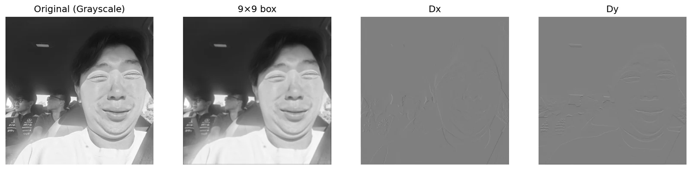
Comparing with SciPy
I checked both implementations against scipy.signal.convolve2d using the same zero-filled boundaries. An asymmetric filter is useful here because forgetting to flip it would give a different answer.
Correctness check with an asymmetric filter
# small test image array
test_image = np.arange(1, 21, dtype=np.float64).reshape(4, 5)
# small asymmetric test kernel to catch missed kernel flips
test_kernel = np.array([
[0, 1, 2],
[3, 4, 5],
[6, 7, 8],
], dtype=np.float64)
result_four = conv_4_loop(test_image, test_kernel)
result_two = conv_2_loop(test_image, test_kernel)
result_scipy = convolve2d(test_image, test_kernel, mode="same", boundary="fill", fillvalue=0)
# allow small differences from floating-point summation order
np.testing.assert_allclose(result_four, result_scipy, atol=1e-12)
np.testing.assert_allclose(result_two, result_scipy, atol=1e-12)
print("Four-loop maximum error:", np.max(np.abs(result_four - result_scipy)))
print("Two-loop maximum error:", np.max(np.abs(result_two - result_scipy)))
| Implementation | Runtime | Maximum difference from SciPy |
|---|---|---|
| Four loops | 54.685 s | 2.665 × 10−15 |
| Two loops | 4.923 s | 7.772 × 10−16 |
| SciPy | 0.151 s | 0 |
The two-loop version was about 11 times faster than the four-loop version on my run. SciPy was still much faster. The tiny numerical differences are floating-point rounding, rather than a visible change in the output.
Part 1.2
Finite Difference Operator
I convolve the cameraman image with Dx = [1, 0, −1] and its vertical version. The x derivative responds to changes across columns, while the y derivative responds to changes across rows. I combine them into a gradient magnitude, then apply a threshold to turn it into an edge image.
edges = magnitude > threshold
Derivatives, magnitude, and binary edges
# Keep the boundary convention from Part 1.1.
dx = convolve2d(cameraman, Dx, mode="same", boundary="fill", fillvalue=0)
dy = convolve2d(cameraman, Dy, mode="same", boundary="fill", fillvalue=0)
magnitude = np.sqrt(dx**2 + dy**2)
threshold = 0.23
edges = magnitude > threshold
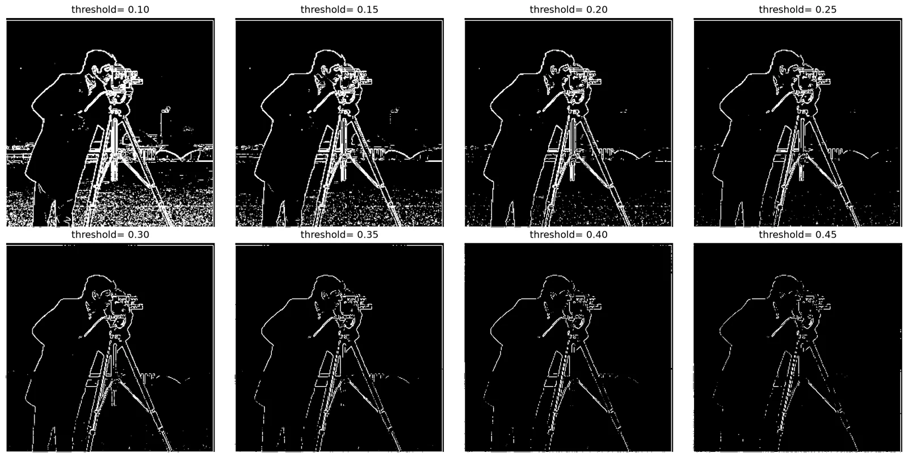
I chose T = 0.23. Lower thresholds pick up more texture in the ground, while higher ones remove weaker parts of the cameraman and tripod. This keeps the main outline reasonably clear, although some ground texture still remains.
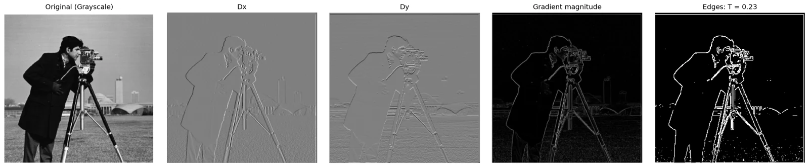
Part 1.3
Derivative of Gaussian
The difference operators also respond to small variations in the grass and background. I blur the original image first using a Gaussian with σ = 1.5, then compute the derivatives again. The kernel radius is ceil(3σ), giving an 11 × 11 Gaussian.
Gaussian smoothing followed by differentiation
sigma = 1.5
radius = int(np.ceil(3 * sigma))
g = cv2.getGaussianKernel(2 * radius + 1, sigma)
G = g @ g.T # Outer product makes the 2D Gaussian.
cam_blur = convolve2d(cameraman, G, mode="same", boundary="fill", fillvalue=0)
smooth_dx = convolve2d(cam_blur, Dx, mode="same", boundary="fill", fillvalue=0)
smooth_dy = convolve2d(cam_blur, Dy, mode="same", boundary="fill", fillvalue=0)
smooth_magnitude = np.sqrt(smooth_dx**2 + smooth_dy**2)
smooth_threshold = 0.11
smooth_edges = smooth_magnitude > smooth_threshold
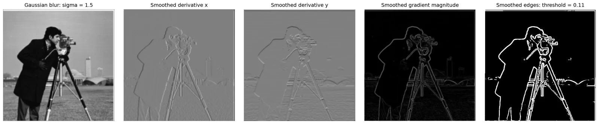
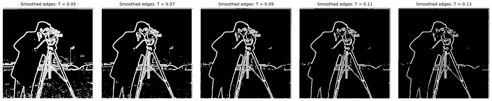
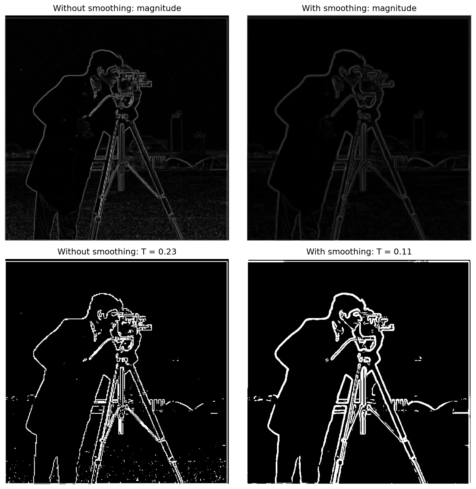
Smoothing removes much of the fine texture, so the main edges stand out more clearly. It also reduces their magnitude, which is why I lowered the threshold to 0.11. Increasing σ and keeping the same threshold would remove more edges; I need to consider both values together.
Combining the two filters
I can combine the Gaussian and derivative filter first, then apply that combined filter to the original image in one convolution. I use full when combining the kernels so their support is preserved.
Constructing and applying the DoG filters
DoG_x = convolve2d(G, Dx, mode="full")
DoG_y = convolve2d(G, Dy, mode="full")
print("DoG x shape:", DoG_x.shape)
print("DoG y shape:", DoG_y.shape)
print("DoG x sum:", DoG_x.sum())
print("DoG y sum:", DoG_y.sum())
dog_dx = convolve2d(cameraman, DoG_x, mode="same", boundary="fill", fillvalue=0)
dog_dy = convolve2d(cameraman, DoG_y, mode="same", boundary="fill", fillvalue=0)
dog_magnitude = np.sqrt(dog_dx**2 + dog_dy**2)
dog_edges = dog_magnitude > smooth_threshold
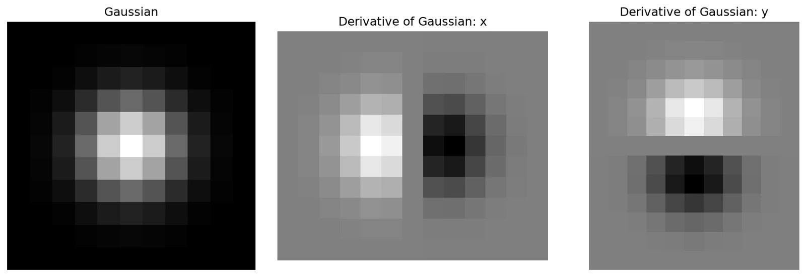
The maximum interior differences between the two-step derivatives and the DoG derivatives were 9.992 × 10−16
in x and 1.147 × 10−15
in y. They agree to floating-point precision. Cropping after each same convolution can change boundary pixels, so I also checked full convolution followed by a single crop; that comparison passed across the entire image.
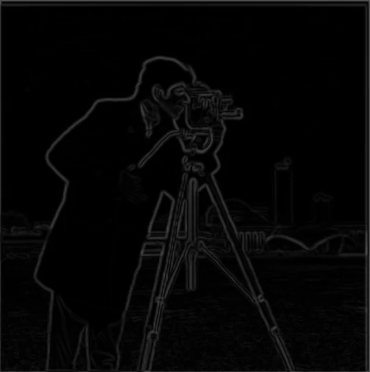
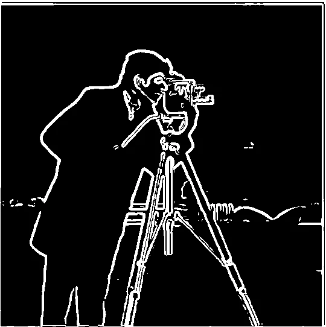
Part 2.1
Image “Sharpening”
A Gaussian blur keeps the low frequencies. Subtracting it from the original gives the high-frequency details. I add a scaled version of those details back to make the edges stronger.
sharpened = image + α × details
unsharp kernel = (1 + α)δ − αG
The last expression combines sharpening into one convolution. The impulse δ keeps the original image, while the Gaussian subtracts a portion of the low frequencies. I filter each RGB channel separately, using symmetric boundaries here to avoid a dark zero-padded border.
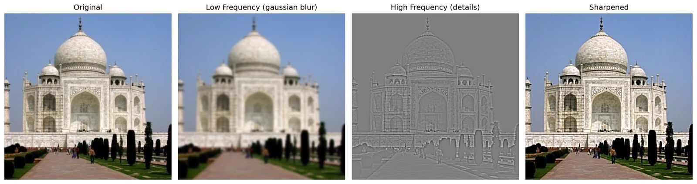
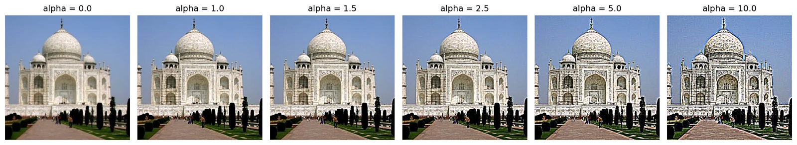
Increasing α makes the architectural edges more pronounced, but the strongest settings also produce harsh outlines and halos. α = 0 gives the original. The single-convolution result matched image + α × details with a maximum difference of 1.554 × 10−15.
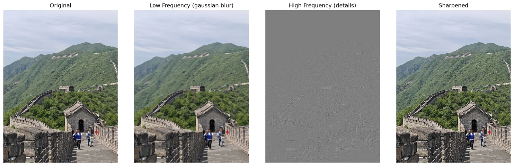
img/gwoc.jpg, with σ = 1.5 and α = 1.0.Blurring a sharp image, then sharpening it again
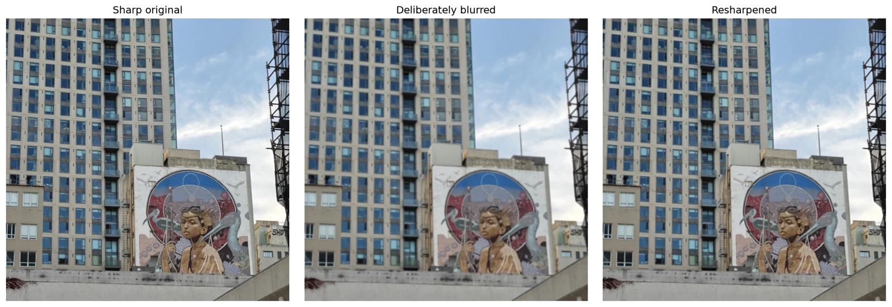
The resharpened image has stronger local contrast than the blurred image, but it does not recover all the detail in the original. Sharpening amplifies what is left after the blur; it cannot reconstruct information that was removed.
Part 2.2
Hybrid Images
A hybrid combines the high frequencies of one image with the low frequencies of another. Up close, the small details are easier to see. From farther away, or at a smaller display size, the smoother image becomes more noticeable.
I align the images before filtering so important features, such as the eyes, overlap. Then I experiment with two separate Gaussian sigmas: one controls the blur subtracted to get the high frequencies, and the other controls the low-pass image.
low = G(σ_low) * aligned_low
hybrid = high + low
The saved parameters
These are the values stored with my exported results in parameters.json. For Derek/Nutmeg, I use Nutmeg for the high frequencies and Derek for the low frequencies.
| Pair | High-frequency source | σhigh | Low-frequency source | σlow |
|---|---|---|---|---|
| Derek + Nutmeg | Nutmeg | 3 | Derek | 5 |
| Gigachad + White Fatalis | White Fatalis | 1 | Gigachad | 3 |
| Beatles + Kendrick | Kendrick | 1.5 | Beatles | 3 |
Derek and Nutmeg: the complete process
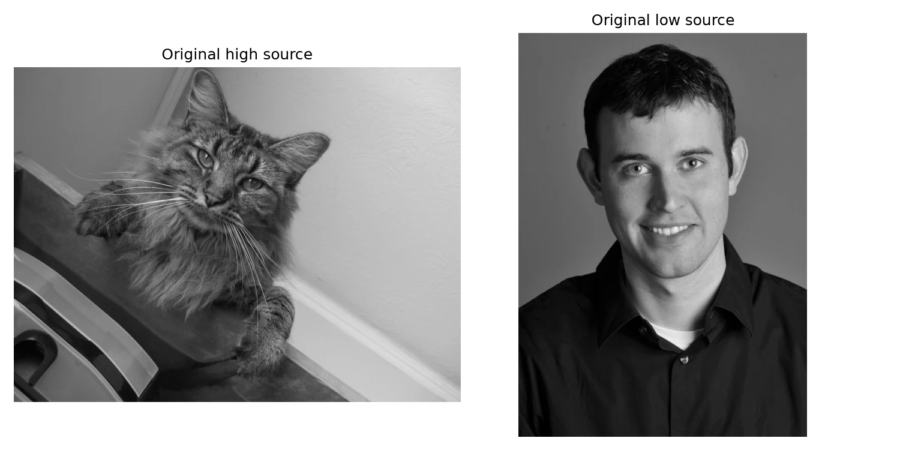
img/nutmeg.jpg and low-frequency source img/DerekPicture.jpg.I select corresponding eye landmarks to align the images. The alignment code translates, rescales, and rotates the inputs before matching their dimensions. The overlay helps me check whether the facial features overlap. The black padding is still present in this saved run; I did not crop the aligned images.
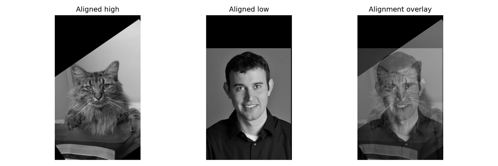
Choosing the cutoffs
I tested σhigh = 2, 3, 4, 5, 6 and σlow = 3, 5, 7, 9, 11 in this grid. Larger σlow makes the low-pass image smoother. Larger σhigh subtracts a more blurred image, retaining a broader range of detail in the high-pass component. Sigma is a spatial blur parameter in pixels, rather than a numerical frequency cutoff.
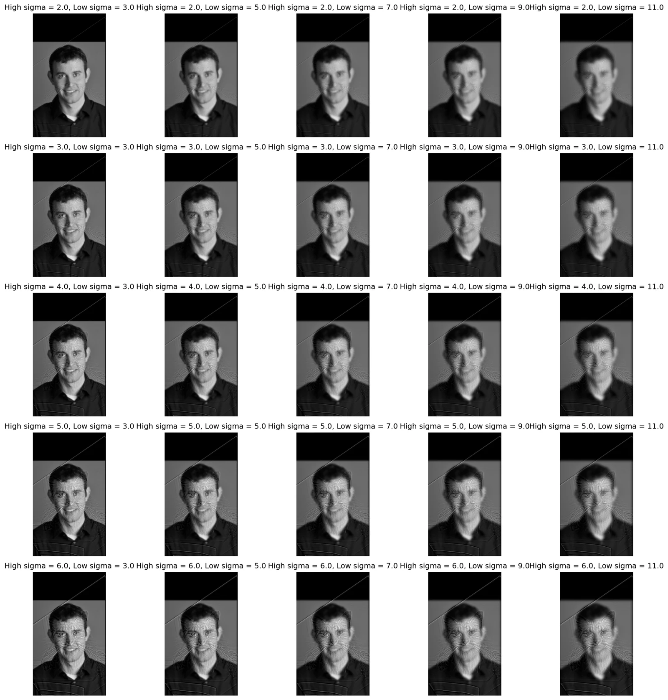
At σhigh = 3 and σlow = 5, Derek remains visible in the smooth image while Nutmeg contributes the fine contours. The high-pass response is subtle in this example, and the padding creates a diagonal boundary near the top. Alignment and cropping matter as well as the sigmas.
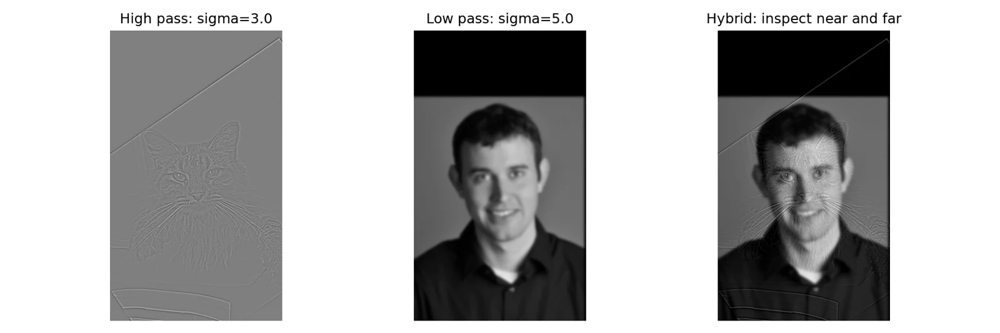
Frequency analysis
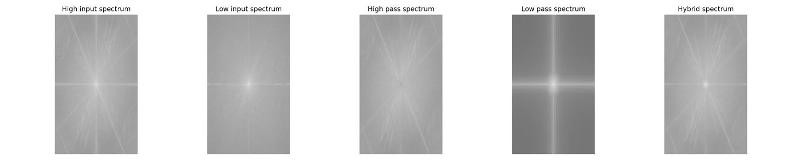
The center of the shifted spectrum represents low frequencies. Gaussian low-pass filtering concentrates the visible spectrum near the center, while high-pass filtering suppresses the low-frequency content. The hybrid combines the two components. The bright cross also reflects strong horizontal and vertical structure, including the padded boundaries.
Looking near and far
Both displays below use the same saved hybrid. Only the display size changes: the smaller view makes fine details harder to see. This is a viewing comparison, rather than another filtering step.
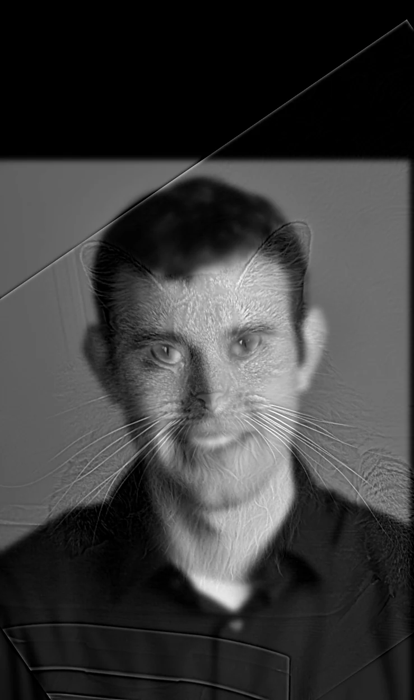
Gigachad + White Fatalis
I use White Fatalis for the high-frequency details (σ = 1) and Gigachad for the low-frequency structure (σ = 3). The dragon contours are layered over the face and shoulders.
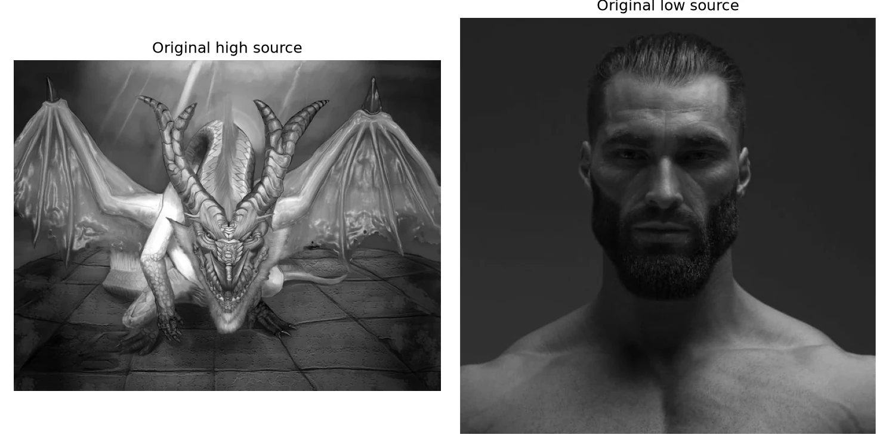
img/white_fatalis.jpg (high) and img/gigachad.jpg (low).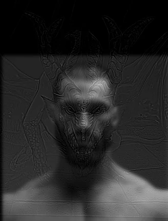
Beatles + Kendrick
I use Kendrick for the high-frequency details (σ = 1.5) and the Beatles for the low-frequency structure (σ = 3). The two images both show people walking, but their backgrounds and silhouettes differ, so some contours overlap awkwardly in the result.
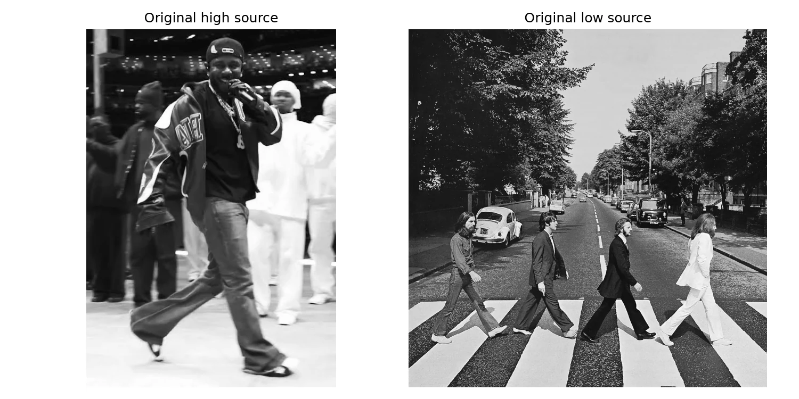
img/kendrick.jpg (high) and img/beatles.jpg (low).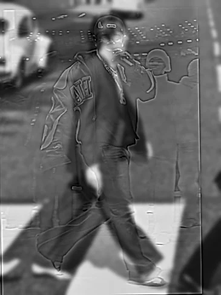
Part 2.3
Gaussian and Laplacian Stacks
I use stacks rather than pyramids, so every level has the same dimensions. There is no downsampling. Level 0 is the original image; the remaining Gaussian levels blur the original with σ = 2, 4, 8, 16, and 32.
The Laplacian bands are differences between neighboring Gaussian levels. I keep the last Gaussian image as the low-frequency residual, so summing all six Laplacian levels reconstructs the original.
L[last] = G[last]
image = sum(L)
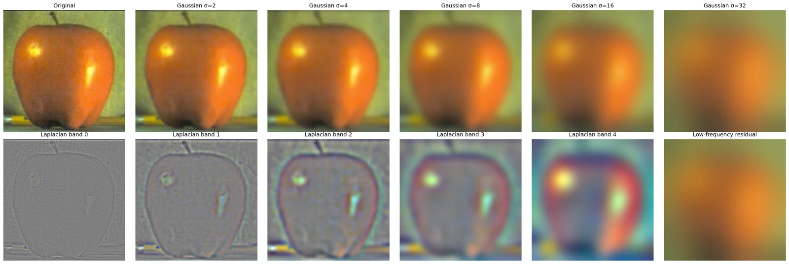
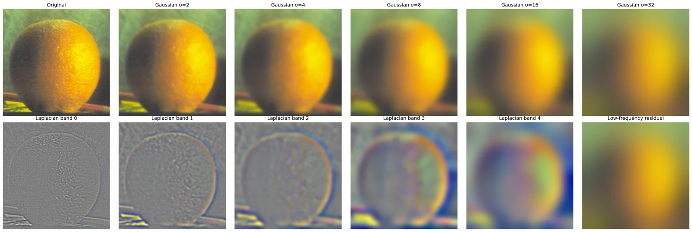
The early Laplacian bands contain the fine details, while later bands contain broader changes. I map signed bands around middle gray only for visualization. Each displayed band has its own scale, so these pictures do not directly compare the strength of different levels.
Recreating Figure 3.42 (a–l)
I blend with a vertical step mask: white selects the apple on the left and black selects the orange on the right. The mask gets its own Gaussian stack, matching the image scales.
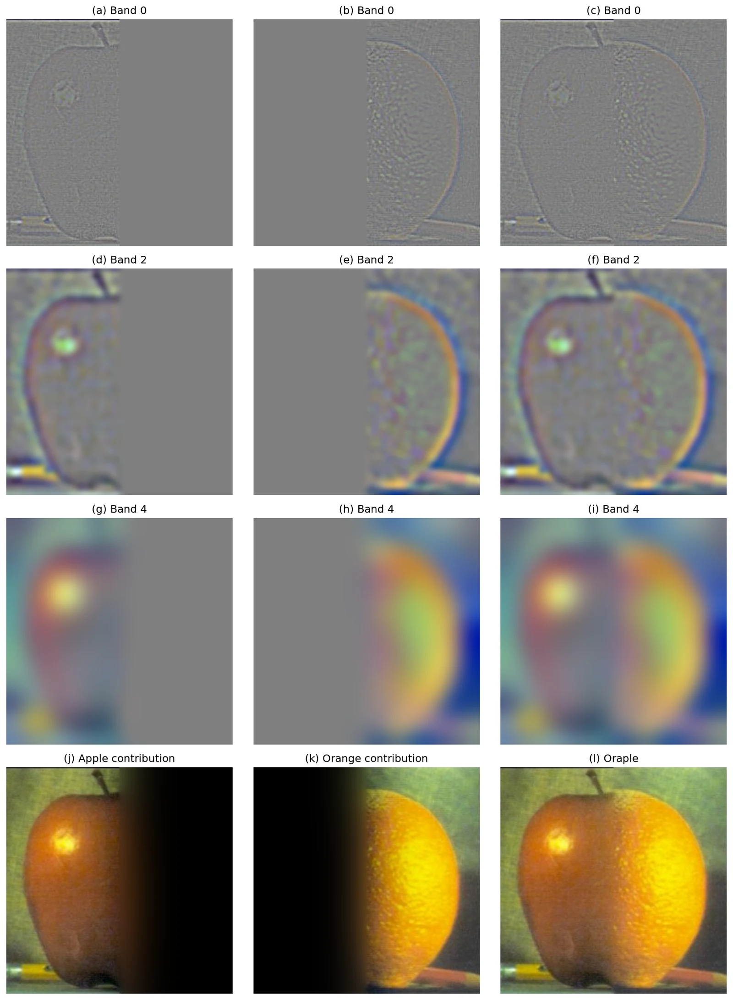
Part 2.4
Multiresolution Blending
A direct cut applies the same mask at every frequency, which can leave an obvious seam. Instead, I combine each pair of Laplacian bands using the corresponding blurred mask. The finer bands keep a more localized transition, while the low frequencies blend over a wider area.
result = sum(blended)
The inputs stay in color. Only the mask is grayscale: white selects A, black selects B, and gray gives a weighted mixture. A, B, and the mask must have matching spatial dimensions after alignment.
I checked the endpoints too: an all-white mask reconstructs A, and an all-black mask reconstructs B. Both assertions passed in my notebook.
Jerma985 + Wall Titan
I use an irregular face-shaped mask to put Jerma into the Wall Titan image. Compared with the direct cut, the stack blend makes the boundary less abrupt, although differences in lighting and facial texture still affect how convincing it looks.
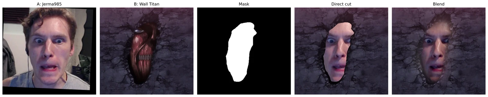
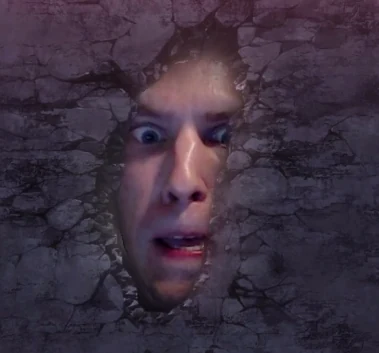
Golden Gate Bridge + Gore Magala
Another irregular mask keeps parts of the bridge scene while bringing in Gore Magala. The mask follows the region I want to retain rather than using a straight seam.
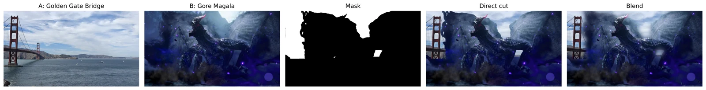
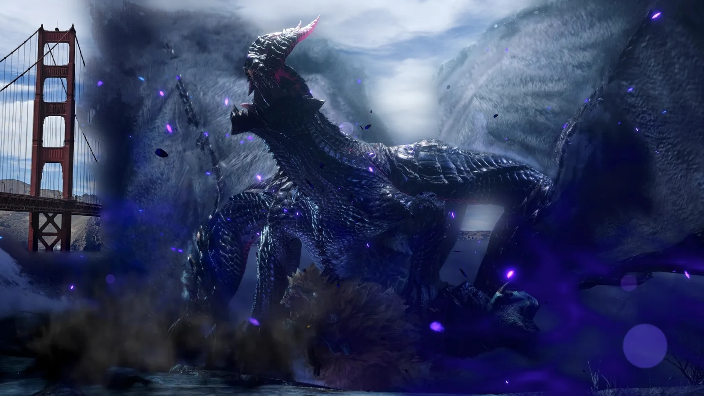
Two lake images
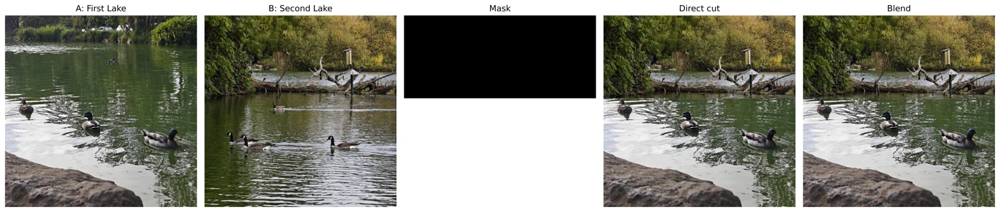
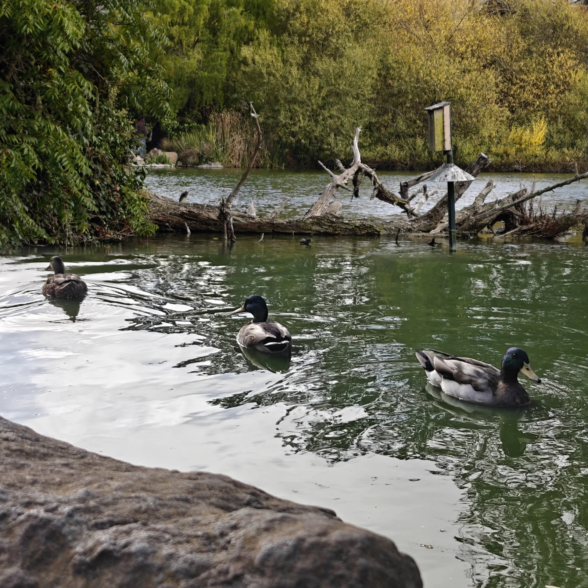
A picture of me + Lake of Rot
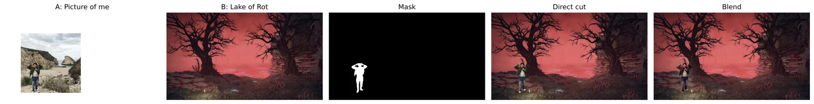
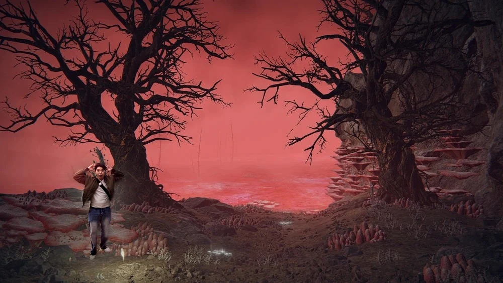
All levels, and the final reconstruction
For the Jerma/Titan example, each row shows the Gaussian mask, masked A band, masked B band, and combined band. The final row sums the raw bands to show the two total contributions and the final blend. I do not sum the gray visualization images.
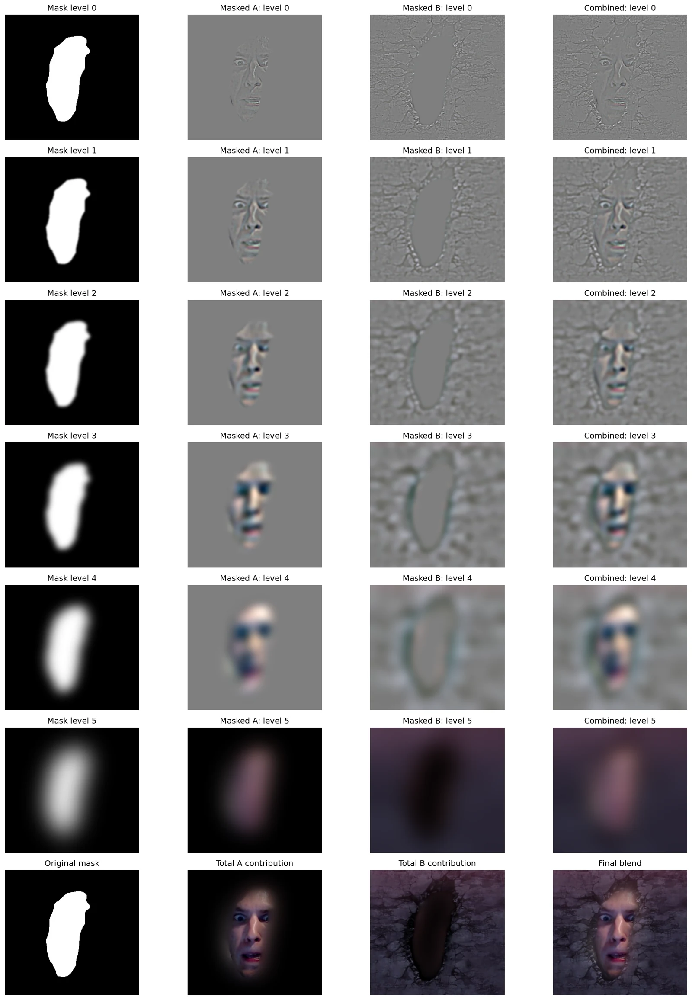
What I learned
The Mask Is Part of the Blend
The biggest thing I learned is that a smooth blend is not just about using gray in a mask. The mask needs to change with the frequency level. A narrow transition can keep the details in place, while a wider transition helps the lighting and color meet more gradually.
I also found that parameters depend on the image and how I view it. The edge threshold needs to change after smoothing, and a hybrid that looks good in a small grid may look different when I open it at full size. There is no single sigma that works for every image.
Finally, I realised how fun it is to blend images that mix reality and fantasy, especially when I can do something goofy with it.